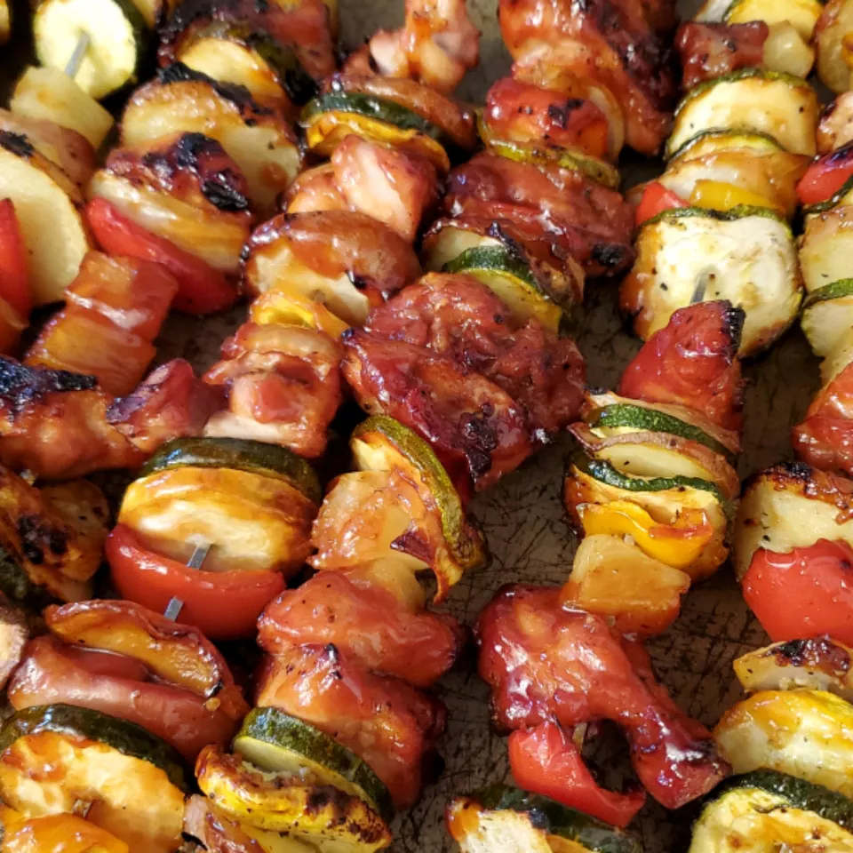

Ultra Easy Pineapple Chicken Kabobs

Description
Fire up the grill, and enjoy these skewers loaded with bell pepper, onion, chicken, and pineapple chunks. Reviewer kvcooking says, "So simple but what a fantastic flavor combination!" Kick the meal off with some spicy mango salsa and tortilla chips for a truly tropical combination.
Ingredients
- 1 green bell pepper, cut into 1-inch pieces
- ½ onion, cut into 1-inch pieces
- ½ pound skinless, boneless chicken breast halves, cut into 1-inch pieces
- 1 (15 ounce) can pineapple chunks, drained
- ¼ cup barbeque sauce, or as needed
- 6 skewers
Steps
- Preheat an outdoor grill for medium-high heat and lightly oil the grate.
- Thread green bell pepper, onion, chicken, and pineapple onto skewers; brush with barbeque sauce.
- Cook on the preheated grill until chicken is no longer pink in the center and the juices run clear, 7 to 10 minutes per side.